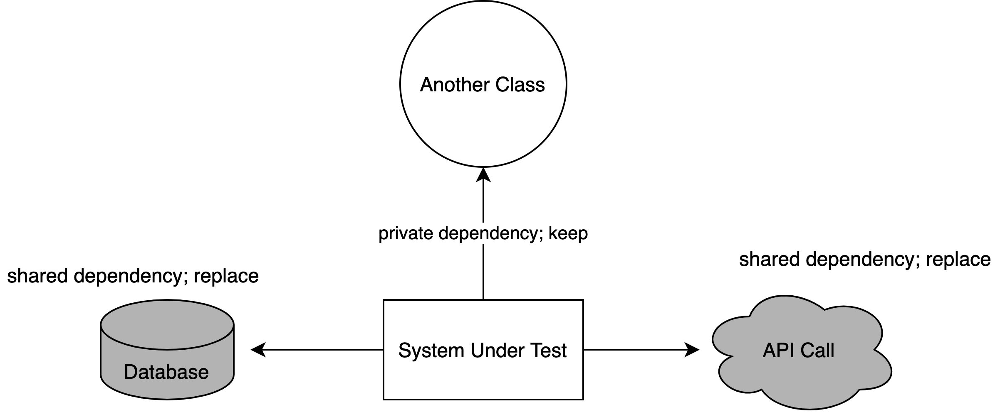

Unit Test
by Gavinda KinandanaTest Pyramid

What is unit test ?

An automated test that
- Verifies a small piece of code (also known as a unit)
- Does it quickly
- And does it in an isolated manner
2 Types of Isolation
Solitary Unit Test

Sociable Unit Test
Example
Actual Code :
// file user_model.go
type User struct {
//
// some fields
//
}
// file repository/user_repo.go
type UserRepository interface {
GetUsers() ([]User, error)
}
type userRepositoryImpl struct{
Conn *sql.DB
}
func NewUserRepository(conn *sql.DB) UserRepository {
return &userRepositoryImpl{conn}
}
func (r *userRepositoryImpl) GetUsers() ([]User, error) {
result = make([]User, 0)
rows, err := r.Conn.Query(query, args...)
//
// do rows scan and err checking
///
return result, nil
}
// file service/user_service.go
type UserService struct {
repository UserRepository
}
func NewUserService(repository UserRepository) *UserService {
return &UserService{
repository: repository,
}
}
func (c *UserService) ResolveUsers() (users []User, err error) {
users, err = c.repository.GetUsers()
//
// do something with user and err
//
return
}
Example Solitary Unit Test
// file service/user_service_test.go
func TestResolveUsers(t *testing.T) {
// Arrange
users := []User{
{
// set the user data
}
}
repository := &mocks.UserRepository{}
repository.
On("GetUsers").
Return(users, nil).
Once()
service := NewUserService(repository)
// Act
userList, err := service.ResolveUsers()
// Assert
assert.Nil(t, err)
assert.Len(t, userList, 2)
}
Example Sociable Unit Test
// file service/user_service_test.go
func TestResolveUsers(t *testing.T) {
// Arrange
// setup sql mock
db, mock, _ := sqlmock.New()
defer db.Close()
users := []User{
{
// set the user data
}
}
mock.ExpectQuery("SELECT ... ").WillReturnRows(users)
repository := NewUserRepository(db)
service := NewUserService(repository)
// Act
userList, err := service.ResolveUsers()
// Assert
assert.Nil(t, err)
assert.Len(t, userList, 2)
}
| Isolation Type | A unit is | Uses test doubles for |
|---|---|---|
| Solitary | A class | All but immutable dependencies |
| Sociable | A class or a set of classes | Shared dependencies |
What to Test ?
- One test class per production class
- Test the public interface of the class
- Don't test trivial code
Test Structure
- Set up the test data (Arrange)
- Call your method under test (Act)
- Assert that the expected results are returned (Assert)
Arrange
users := []User{
{
// set the user data
}
}
repository := &mocks.UserRepository{}
repository.
On("GetUsers").
Return(users, nil).
Once()
service := NewUserService(repository)
Act
userList, err := service.ResolveUsers()
Assert
assert.Nil(t, err)
assert.Len(t, userList, 2)
The Three Styles of Unit Testing
- Output-based testing
- State-based testing
- Communication-based testing
The Output-based Testing
You feed an input to the system under test (SUT) and check the output it produces
func TestCalculateDiscount(t *testing.T){
product1 := Product{
// set the data
}
product2 := Product{
// set the data
}
priceService := service.NewPriceService()
discount := priceService.CalculateDiscount(product1, product2)
assert.Equal(t, 0.5, discount)
}
The State-based Testing
Verifying the state of the system after an operation is complete
func TestAddProduct(t *testing.T) {
product := Product{
// set the data
}
productService := service.NewProductService()
productService.AddProduct(product)
assert.Equal(t, 1, productService.Count())
}
The Communication-based Testing
This style uses mocks to verify communications between the system under test and its collaborators
func TestResolveUsers(t *testing.T) {
book := Book{
// set the book data
}
repository := &mocks.BookRepository{}
repository.
On("InsertBook", book).
Return(nil).
Once()
service := NewBookService(repository)
service.AddBook(book)
}
The Goal of Unit Testing
- Makes you confident that your changes won’t produce the nightmare bugs
- Enable sustainable growth of the development
Thank you
References :